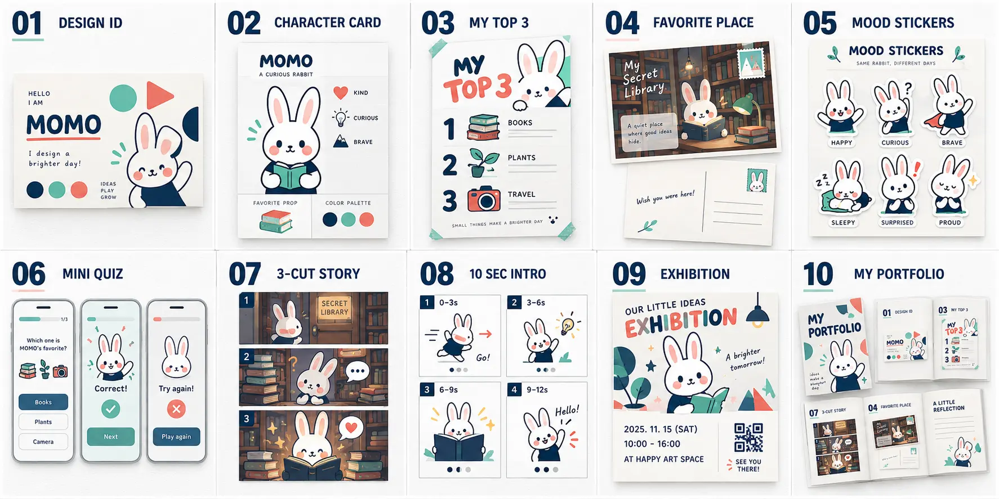
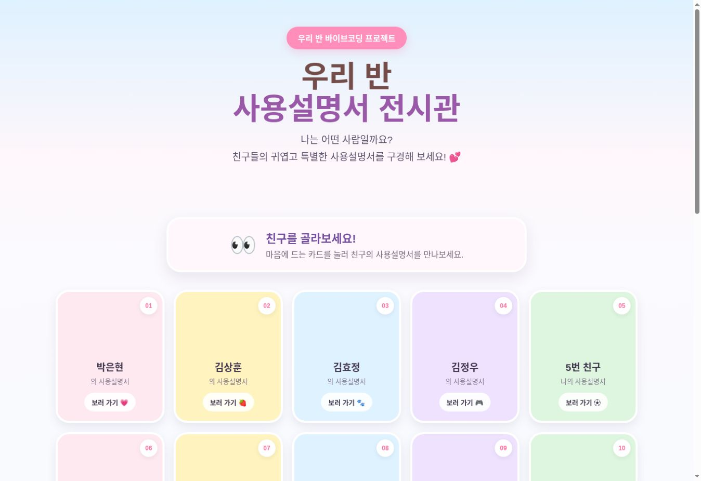
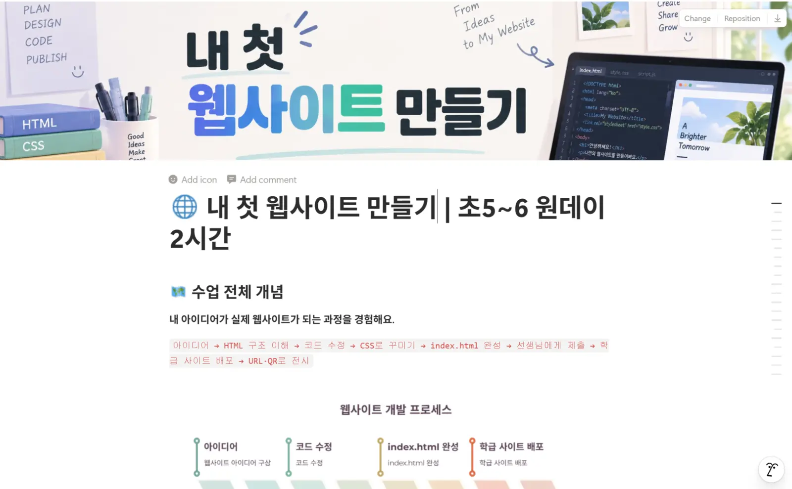
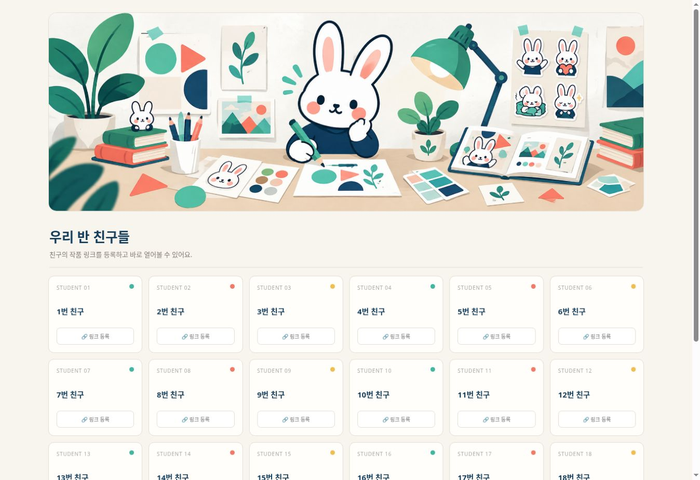
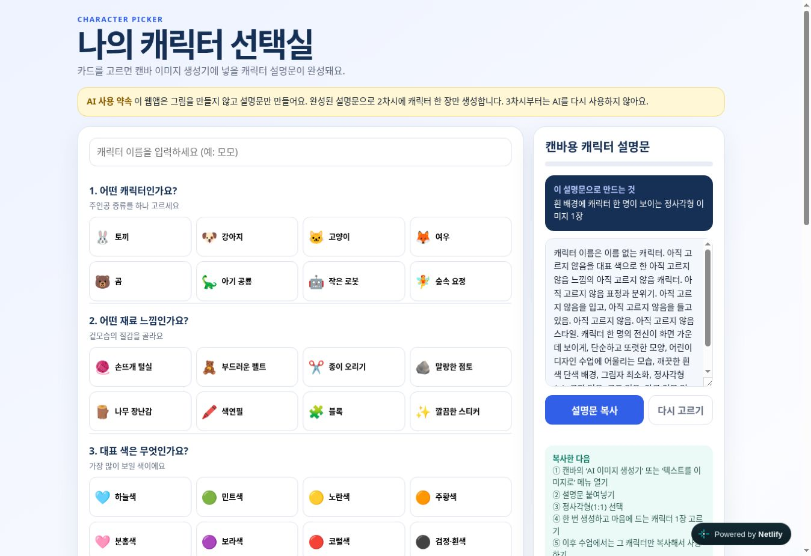

01 · ELEMENTARY DESIGN
Canva 디자인 랩
캐릭터 카드부터 디자인 명함, TOP3 포스터, 미니 퀴즈, 나 사용설명서, 3컷 이야기와 디자인 작품집까지 매 차시 하나의 결과물을 완성합니다.
수업 흐름아이디어 선택기능 실습작품 완성·공유
초등학생의 아이디어를 디지털 작품으로, 시니어의 배움을 생활 속 자신감으로 연결합니다. 개발자의 구조화 경험과 교육 현장의 감각을 바탕으로 이해하고, 직접 만들고, 서로 나누는 수업을 설계합니다.
학습자가 무엇을 배우고, 어떤 과정을 거쳐, 무엇을 완성하는지 한눈에 확인할 수 있도록 구성했습니다.

캐릭터 카드부터 디자인 명함, TOP3 포스터, 미니 퀴즈, 나 사용설명서, 3컷 이야기와 디자인 작품집까지 매 차시 하나의 결과물을 완성합니다.

직접 만든 설문을 Google Sheets로 분석하고 Canva 포스터로 표현한 뒤 Padlet에서 서로의 결과를 감상합니다.

HTML 구조를 이해하고 JavaScript 템플릿을 직접 수정한 뒤 Netlify에 배포해 공유 가능한 웹주소를 만듭니다.

스마트폰 기초와 생활 앱을 반복 실습하고, AI 이미지 도구로 나만의 이야기를 그림동화와 디지털 콘텐츠로 완성합니다.
강사가 게임을 직접 제작하고 학습 수준에 맞춰 강의안을 구성합니다. 순차·조건·반복·변수를 활용해 과일 먹기, 미로 탈출, 퀴즈, 애니메이션과 선택형 이야기 등 다양한 콘텐츠를 만듭니다.
수업의 방향과 결과물은 공개하되, 세부 지도안과 원본 템플릿은 포트폴리오에서 일부만 소개합니다.
캐릭터 카드, 엽서, 스티커, 퀴즈, 3컷 이야기, 움직이는 소개와 작품집.
Notion 안내부터 설문·시트 분석, 포스터 제작, Padlet 공유까지 연결합니다.
HTML과 JavaScript를 수정하고 Netlify에 직접 배포하는 원데이 프로젝트.
직접 제작한 게임과 강의안을 바탕으로 과일 먹기, 미로 탈출, 점수 게임 등 조작하고 도전하는 프로젝트를 진행합니다.
학습 수준에 맞게 구성한 강의안으로 퀴즈, 애니메이션, 선택형 이야기까지 표현과 상호작용을 확장합니다.
생활 속 스마트폰 활용부터 AI 이미지로 만드는 나만의 그림동화까지.
※ 세부 차시안과 활동지 원본은 수업 협의 시 대상과 운영 시간에 맞춰 안내합니다.
설명, 분석, 제작, 공유가 끊기지 않도록 도구를 목적에 맞게 조합합니다.
차시 안내와 학습 자료를 한곳에서 확인합니다.
설문 데이터를 표와 차트로 읽고 분석합니다.
아이디어를 시각적인 결과물로 완성합니다.
작품을 제출하고 서로 감상하며 나눕니다.

디지털교육 강사
초등 코딩 · 디지털 리터러시 · 시니어 스마트폰
Java, JSP, Spring, Oracle, JavaScript 기반 개발 경험.
정보처리기사 · AI 디지털튜터 양성과정 수료.
디지털배움터와 경로당 수업 보조·출강 경험.
Notion, Google Sheets, Canva, Padlet과 웹 기술 활용.